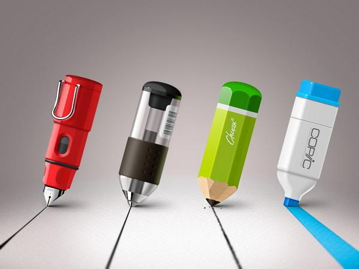
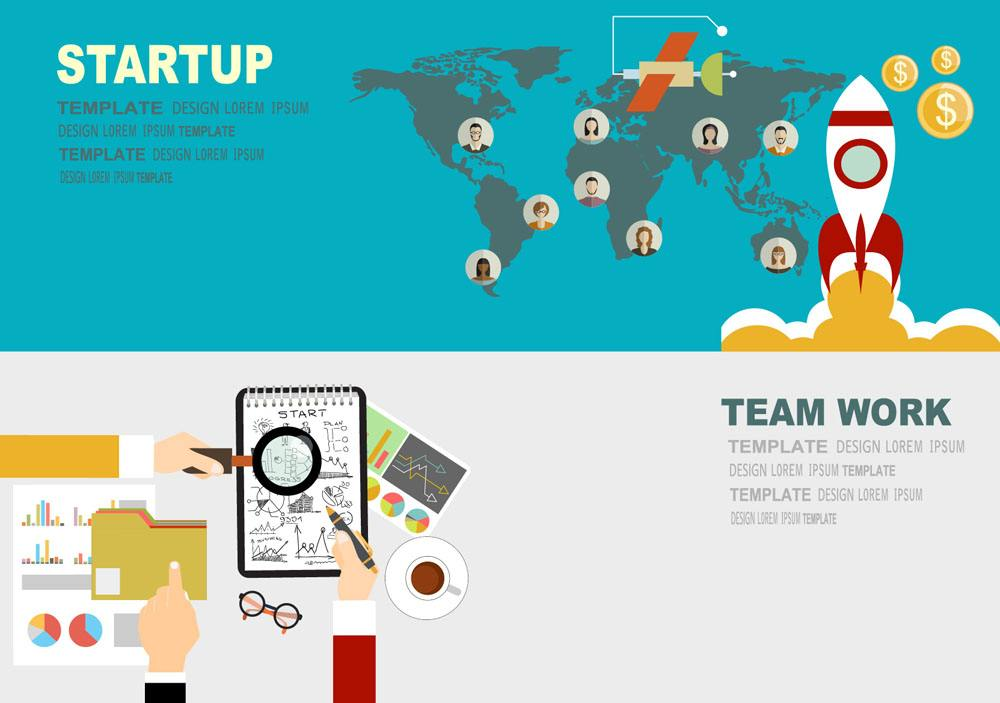

坊间传言，UI设计师已趋于饱和，真的是这样吗?目前UI设计师的前景到底如何呢?

其实目前UI设计师的前景十分优越，依旧是产品抢占市场的核心竞争力之一。 以北京某公司为例，刚入行的UI设计师起薪在4000—6000左右，半年或者一年以上经验的的UI设计师薪水可以达到年薪10W，2-3年后的UI设计老手可以达到20—30W一年。根据近期的相关调查，华为、百度等名企的UI设计总监薪资超过百万，同级别薪水普遍高于其他IT、设计岗位，成为目前炙手可热的高薪岗位。

所谓的人员饱和并不正确，之所以会出现这样的说法，究其原因是市场对UI设计师的门槛提高了。
在2014年之前，UI设计的门槛低，高薪吸引了大量的人奔涌进入这个行业。学的不太好的同学大概月薪3000-4000，学的一般但背景学历不错的，工资差不多是在5000-6000，学历背景不错又有能力的，大概月薪在1万左右。但是现在的情况出现了个巨大的断层，学的差的没工作，学的好的则混的很好。因为对于企业来说，需要更高质量的UI设计师，这也是很多UI设计师反映找不到工作，没有前景的原因。
截取2016年6月4日之前的职友网调查数据显示，北京和太原的年末与年初招聘旺季依旧有大量企业需求UI设计师，就算是招聘淡季也会有很多企业需要这方面的专业人才。
纵观市场，其实每个行业都一样的，淘宝刚创建的初期，有些商家也因此转了，现在很多人的淘宝店很难经营的起来是不是就意味着电商也饱和了?肯定不是，我们都还在初期，只不过要求的门槛提高了。所以这个时候需要认清的是自己的能力，然后进步去适应市场，提高自己的竞争力。
由此可见，UI设计前景乐观，假如你对UI设计行业感兴趣，热爱互联网，即使没有任何基础，也可以尝试学习UI，加之目前众多高等院校没有开设UI课程，你加入UI这个大家庭，一定会有所收获，别一番天地。
Copyright © 2013-2017 版权所有 优逸客科技有限公司
联系电话：400-969-7660 晋ICP备13006051号